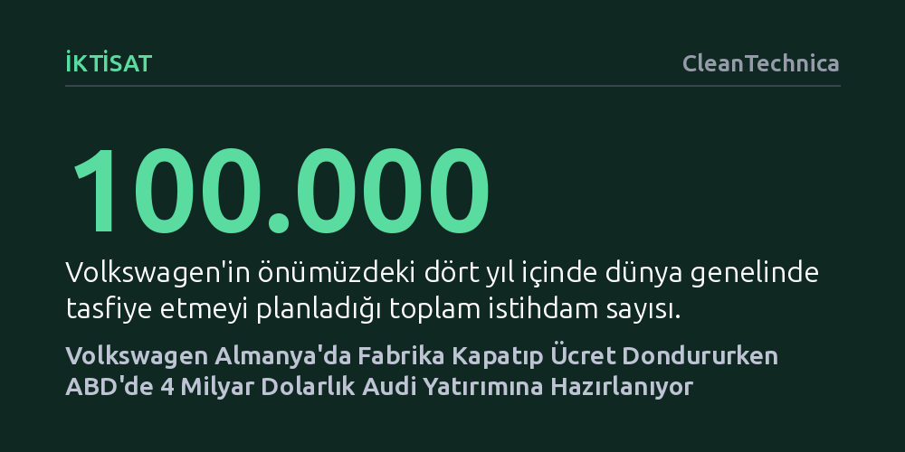

IKTISAT · CleanTechnica · 2026-10-26
Kârı sert düşen Volkswagen Grubu, Almanya'da dört fabrikayı kapatıp küresel çapta 100 bin istihdamı tasfiye etmeyi planlarken ABD tarifelerinden kaçınmak amacıyla Georgia'da 4 milyar dolarlık Audi tesisi kuruyor. Bu radikal tasarruf hamlesi, 660 bin çalışanın ücretlerinin dondurulmasını ve sendikayla sert müzakereleri tetikliyor.
Geleneksel otomotiv devlerinin Avrupa'daki yüksek maliyetler ve korumacı ticaret politikaları karşısında yerel üretimi kısıp sermayeyi doğrudan hedef pazarlara taşımak zorunda kaldığını somut olarak gösteriyor.

Volkswagen Grubu, tarihinin en derin mali krizlerinden biriyle karşı karşıya. Grubun 2023 yılında 22,6 milyar avro olan faaliyet kârı, 2025'te sert bir düşüşle 8,9 milyar avroya geriledi; şirket içi tahminler 2026 kârının bunun da yarısına inebileceğine işaret ediyor. Gelirlerdeki bu dramatik erime, otomotiv devini olağanüstü sertlikte bir kemer sıkma programı açıklamaya zorladı.
Şirket yönetimi, azalan talep ve artan küresel rekabet ortamında Almanya'daki üretim kapasitesinin ihtiyaç fazlası olduğunu belirtiyor. Hazırlanan acil önlem planı kapsamında, Almanya'daki dört fabrikanın tamamen kapatılması ve yurt içindeki 50 bin pozisyonun tasfiye edilmesi hedefleniyor. Önümüzdeki dört yıl içinde dünya çapında toplam 100 bin çalışanın işine son verilmesi ve mevcut araç modellerinin yarısının üretimden kaldırılması öngörülüyor. Hedef, 2030 yılına kadar operasyonel giderleri 11 milyar avro düşürüp tüm değer zincirinde 20 milyar avroluk tasarruf sağlamak.
Yönetim, tasarruf paketini hayata geçirebilmek için Eylül 2026 sonunda, güçlü işçi sendikası IG Metall ile 2024 sonunda mutabakata vardığı toplu iş sözleşmesi hükümlerini tek taraflı olarak feshetti. Feshedilen hükümler, şirketin Almanya'daki ana üretim tesislerinde çalışan 100 binden fazla işçinin çalışma saatlerini, tatil ödeneklerini ve kazanılmış temel sosyal haklarını düzenliyordu.
Gerilimi tırmandıran asıl adım ise tepe yönetimin dünya genelindeki 660 bin çalışanın maaşlarını 2030 yılına kadar dondurma kararı oldu. Şirket temsilcileri koşulların dramatik biçimde bozulduğunu iddia etse de işyeri konseyi bu gerekçeyi kabul etmiyor. İşyeri konseyi başkanı Daniela Cavallo, yönetime rest çekerek "Ülkenin en yüksek maaş alan yönetim kurulunun çözüm üretmek için bizimle birlikte çalışmasını bekliyoruz" ifadesiyle tepkisini ortaya koydu.
Şirket ayrıca işten çıkarılacak çalışanlar için kamu fonlarıyla desteklenen transfer şirketleri kurulmasını öneriyor. Personelin mesleki nitelik kazanarak iş gücü piyasasına yeniden kazandırılmasını amaçlayan bu mekanizma, gerçekte yeniden yapılanma maliyetinin önemli bir kısmını Alman vergi mükelleflerinin sırtına yıkma çabası olarak görülüyor. Tarafların 24 Kasım'da başlayacak müzakerelerde çok sert bir çatışma yaşaması bekleniyor.
Volkswagen ana vatanı Almanya'da fabrikalarını kapatıp çalışanların haklarını kısıtlarken, okyanusun öte tarafında tam tersi yönde dev bir genişleme hamlesine girişiyor. Grubun lüks markası Audi, Amerika Birleşik Devletleri'nin Georgia eyaletinde yer alan Macon kenti yakınlarında sıfırdan 4 milyar dolarlık devasa bir fabrika kurmaya hazırlanıyor. Saha hazırlıklarının bu yıl başlaması, seri üretimin ise 2031 yılında devreye girmesi hedefleniyor.
Bu hamlenin temelinde, ABD'nin Avrupa menşeli ithal otomobillere uyguladığı cezalandırıcı gümrük tarifelerinden kaçınma zorunluluğu yatıyor. Söz konusu tarifeler hem Audi'nin hem de grubun spor otomobil markası Porsche'nin ABD satışlarına büyük darbe vurmuştu. BMW'nin Güney Carolina'da, Mercedes-Benz'in ise Alabama'da kurulu fabrikaları sayesinde korunduğu bu pazarda, Audi şimdiye kadar yerel bir montaj hattına sahip değildi.
Audi CEO'su Gernot Döllner, yıllık 200 bin araç kapasiteli bu tesiste Amerikan tüketicisinin yoğun ilgi gösterdiği lüks SUV modellerinin üretileceğini duyurdu. Benzer şekilde ana grup şirketi de Güney Carolina'da elektrikli ve hibrit arazi araçları üretecek ayrı bir tesisi finanse ediyor. Volkswagen yönetimi, Amerikan topraklarında milyarlarca dolarlık doğrudan üretim üssü kurarak Washington'ın tarife baskısını bertaraf etmeyi amaçlıyor.
Ortaya çıkan tablo, şirketin yalnızca dönemsel bir tasarruf politikası izlemediğini, üretim coğrafyasını kalıcı olarak yeniden tanımladığını gösteriyor. Almanya'daki tesisler yüksek enerji ve iş gücü maliyetleriyle küçülmeye zorlanırken, sermayenin korumacı pazarlara taşınması geleneksel Alman sanayi modelinin temellerini sarsıyor.
Alman işçileri ve sendikalar açısından yurt içindeki fabrikaların kapatılıp ücretlerin dondurulduğu bir dönemde milyarlarca dolarlık kaynağın ABD'ye aktarılması ciddi bir tezat oluşturuyor. Volkswagen'in yakın vadede iflas etmesi beklenmese de küresel korumacılık ve jeopolitik baskılar karşısında Avrupa merkezli üretim düzeninin hızla dağıldığı görülüyor.